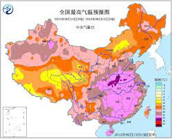

中国天气网讯 今天（3日），华北、黄淮多地出现高温天气，截至下午2点，北京、天津、郑州等地气温突破35℃。预报显示，今后三天（3-5日），这一带的高温天气将继续发酵，高温范围以及强度将在4日达到鼎盛，预计北京、天津、石家庄、济南等地明天的最高气温有望突破38℃，其中北京和石家庄的最高气温还有 望创今年以来的新高。

今天，华北、黄淮一带的高温持续发酵，截至今天下午2点，陕西北部、山西西南部、河北南部、北京、天津、山东西部、河南北部最高气温已普遍超过35℃。大城市中，北京、天津、郑州均迎来高温日。
在阳光暴晒下，地表温度也逐渐走高。今天下午2点，华北黄淮大部地区的地表温度都在50℃以上，部分地区地表温度甚至超过60℃。其中河北衡水地表温度高达68.3℃,天津站和北京站附近的地表温度分别高达66.6℃和66.5℃。
中国天气网气象分析师王伟跃介绍,明天(4日),华北,黄淮地区35℃以上的高温天气还将继续升级,并进入鼎盛阶段,高温强度和范围都将发展到最强。
(文/张慧 数据支持/王伟跃 胡啸 审核/刘文静 张方丽)
本文来源:中国天气网 责任编辑:刘京_NO5631